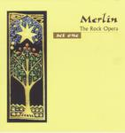

Home Artist links Label link

| Artist: | Merlin |
| Title: | The Rock Opera |
| Label: | irIdea Records 2000-6-2 AB |
| Length(s): | 43+45 minutes |
| Year(s) of release: | 2000 |
| Month of review: | 10/2000 |
Line up
Fabio Zuffanti - bass, percussion
Nicola Bottino - electric and acoustic guitars
Agostino Macor - mellotron, piano, minimoog, digital keyboards, mandolin
Luca Scherani - hammond, digital keyboards, polymoog, piano
Andrea Orlando - drums percussion
with
Edmondo Romano - bagpipes
Federico Foglia - percussion
Massimo Zelante - sitar
Filippo Gambetta - diatonic accordion
Fausto Sidri - percussion
Roberto Vigo - keyboards, choirs
with singers
Alessandro Corvaglia, Loredana Villanaci, Fausto Sidri, Stefano Marelli,
Nadia Girardi, Davide Vacchi, Laura Cavalleri, Carlo Carnevali
and a choir of 17 singers.
Tracks
Disc 1:
| 1) | Overture | 6.42
|
| 2) | As It Was In The Beginning | 9.23
|
| 3) | Winter Lament | 4.45
|
| 4) | The Musician Arrives | 2.12
|
| 5) | Tricked/Must You Leave So Soon? | 4.53
|
| 6) | Free For Another | 5.27
|
| 7) | The Wedding March | 7.29
|
| 8) | Our Time Is Now | 2.35
|
Disc 2:
| 1) | Fairies Dance | 2.48
|
| 2) | Madman Sings | 5.53
|
| 3) | Song For A New Day | 2.06
|
| 5) | Beyond The Nightmares | 5.49
|
| 6) | How To Do The Sleeping Spell | 3.21
|
| 7) | Gloria | 1.15
|
| 8) | Blessed With Peace | 5.24
|
| 9) | How Long Can She Wait? | 1.10
|
| 10) | Uninvited Guest/The Last Battle | 5.16
|
| 11) | Wait For The Golden Age | 4.59
|
Summary
Written by Fabio Zuffanti of Finisterre and Hostsonaten and with lyrics
written by Victoria Heyward this is a large scale production of the life
of Merlin beautifully packaged and documented.
The music
Starting with Overture, disc 1 opens with a symphonic sounding instrumental,
richly arranged, melodious and encompassing the entire spectrum from
lush synths to sizzling keyboards and brimming with organ, acoustic guitars
to progmetallic electric guitar and compositionally I hear a liking to
Pink Floyd, in its atmosphere. Quite a number of good themes run through this
majestic sounding opening. The main theme of the album comes right at the end,
triumphant.
As It Was In The Beginning is the almost ten minute follow up. The music opens
with acoustic guitar a bit in medieval style with some mellow flute playing.
On a telling vocal melody, the Devil sings his tunes. For a devil his voice
is remarkably pleasant. The themes of the overture return right here in the
"chorus" in both the vocals of the Devil, Gwendolyn and Gameida. Some parts
here styled on French accordion music. Gwendylon and Ganeida have beautiful
voices, but especially Ganeida's voice has quite an Italian accent. In the
parts sung together the music has its first climax. Actually the music here
is quite accessible and maybe a bit too much to be expected for some, but
the quality of it can not be denied. Especially the parts sung together have
a strong emotional impact.
In Winter Lament we hear Merlin himself for the first time. This sung is much
more up-tempo reminding me, in style, of After Crying's tribute to Zappa.
The chorus though, sung by a choir, is much slower. Following this Merlin
sings along much slower, but after the bridge the jazzy, upbeat music returns.
Here I'm for the first time reminded of Jesus Christ Superstar, although the
music is more in the symphonic vein.
In The Musician Arrives we return to the medieval style of As It Was...
but with the vocals becoming repetive at the end. Tricked/Must You Leave So
Soon? opens playfully again with references to French music. The focus here
is on the lyrics, less than on the music. In this track especially Rydderch's
part is strong, with some strongly aggressive outbursts.
Free For Another finds us back with Gwendolyn, Merlin's companion and the
Devil. A sad, romantic ballad dominated by piano and acoustic guitar with
sweeping, emotional passages, that make it another highpoint. On the
instrumental side there's some good guitarwork toards the end.
More "progressive" is the almost instrumental Wedding March with some great
keyboards/organ playing and driving guitar work. The second part features the
mellow chorus of before and the closing part is the one where Merlin and the
Devil fight it out, Merlin winning. Arthur and Merlin meet in the final track
of this second act with a dramatic sounding conclusion.
The second disc opens with the short instrumental Fairies Dance. Opening
quite soothingly the music picks up speed on the way becomeing rather upbeat
with some bagpipes thrown in for good measure.
With a driving rhythm Madman Sings, the album continues in a tense and
menacing fashion. Then the music dribbles back down to nothing to get underway
again soon after. The guitar work is quite sharp and Floydian here.
The powerful vocals climax is enough to give me goosebumps.
Friendly sounding is the Song For The New Day with various female vocals
of fairies dancing in the forest. The percussion gives a nice pace to it all.
The meeting of Vivian and Merlin takes place in, not surprisingly, Merlin
And Vivian. Strong melodic lines, backed by bouncy acoustic guitar. Vivian's
vocals seem at times a bit too high. The hasty vocal part reminds me again
of Jesus Christ Superstar (What's The Buzz). The storm then takes place in
the form of a wildly meandering guitar/keyboard/piano part supported
by raging cymbals and other percussion. The melodic lines of the previous track
now return. Sitar returns on Beyond The Nightmare where Merlin returns
to earlier times. Dissonant tones, shards of earlier vocal parts make up
this nightmare track. The panic of Merlin is comparable to that of Jesus
during Gethesemane. However, it seems that Merlin does get an answer from
"God" in the form of Arthur. Slow ambientish music dominates.
Merlin and Vivian say goodbye in the medieval styled How To Do The Sleeping
Spell. The vocal melodies are familiar from earlier. After some heavy guitar
parts the music obtains a mysterious tranquil quality. Gloria is a short
vocal piece with Latin lyrics. Optimistic Blessed With Peace follows with
washes of drums, trumpet like sounds and an up-tempo chorus. Arthur sings
his part after which the chorus returns and a combination of bagpipes
and percussion winds the track down. After the short ballad How Long Can She
Wait? we come to the wedding of Arthur and his fight with the Devil.
The music during the fight reminds me again of Jesus Christ Superstar, driving
and brimming with organ. Wait For The Golden Age is the bombastic climactic
conclusion to this rock opera with nicely arranged vocals.
Conclusion
A marvellous musical-styled progressive rock opera. The emotional climaxes
are high and the story is well-played out. The singers and players are good,
although for the critical listeners, maybe the accents are sometimes a bit too
strong. The themes that run throughout this entire musical are good, sometimes
a bit mellow. At first listen I found this album to be a bit too accessible,
but on the long run the whole of it, the vocal lines that twist at places in
just the rights way, the occasional outbursts into majestic or bombastic
progressive rock, make this accessible piece of work, work out in the right
way. Comes highly recommended.
© Jurriaan Hage